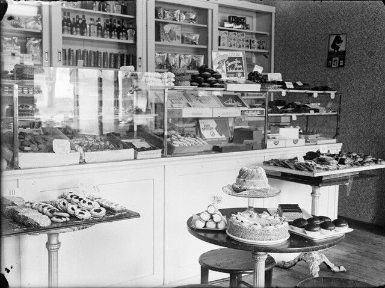
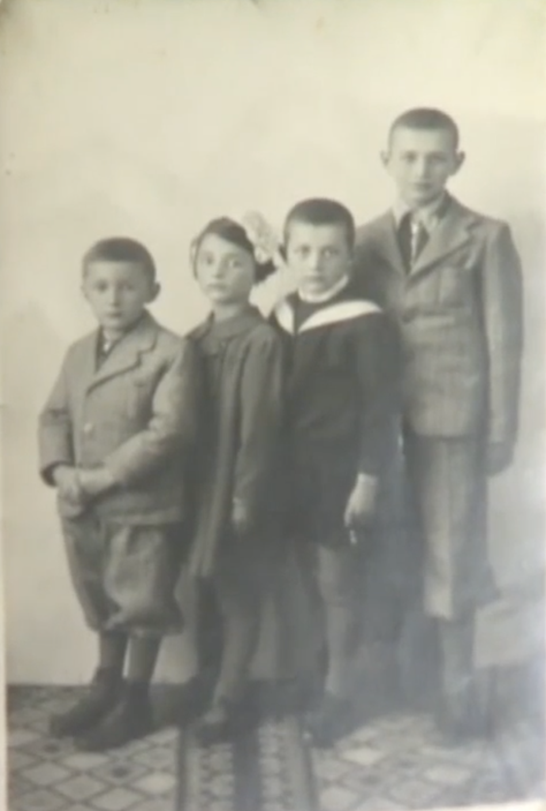
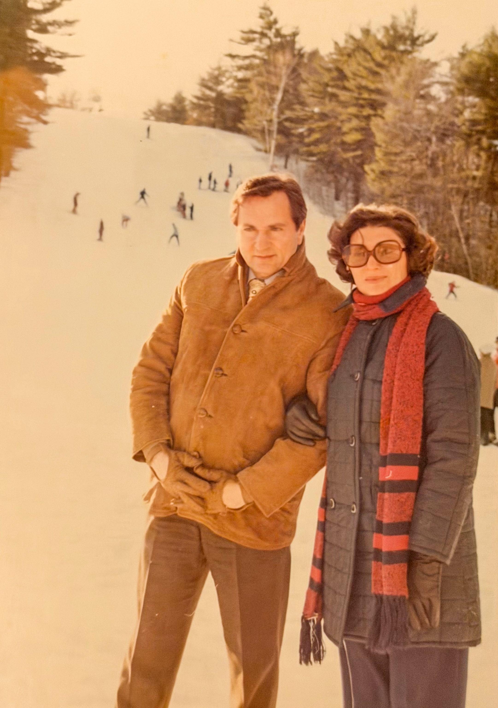
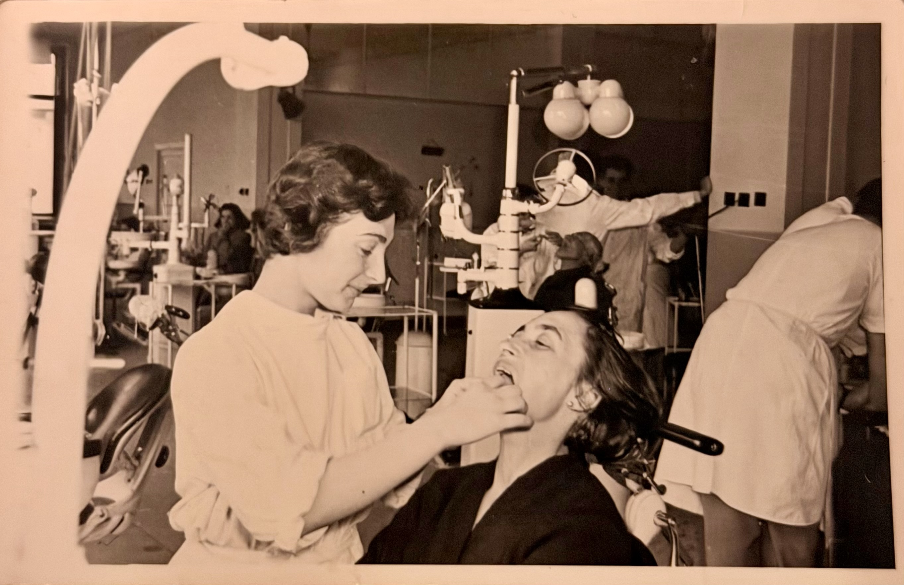

She was seven when her family was deported. She was nine when she came back. For fifty years, she did not speak of what happened in between.
She was born Rena Pitaru on June 20, 1934, in Dorohoi, a city in the northeast of Romania. She was the youngest of three children and the only girl. Her older brothers were Gershon and David. Her parents had always dreamed of having a daughter.
Her father, Iancu Pitaru, owned Cofetăria Pitaru, the first proper pastry shop in town. He had built it with his brothers, modeling it on Austrian and French confectionery: chocolate, ice cream, fine pastry, served in a room where people came to linger. Her mother, Mina Pitaru, was a milliner who made some of the most admired hats in town. The pastry shop was the kind of place where the whole town said, we'll have pastries at the Pitaru.

The household was Orthodox but modern. Her grandfather on her mother's side, Reb Yosl Naftule, was the head of the shoemakers' synagogue. Her father joined that congregation after he married into the family, even though the bakers had their own synagogue too. There were at least four synagogues in town, organized by trade: tailors, shoemakers, farriers, and bakers. Friday nights were Shabbat at home. Saturday lunches were the long midday meal at her grandparents' house, with all the uncles and aunts.
She was surrounded by her family. Her grandmother Hanna helped run the business. Her uncles, Marco, Aron, Berko, Kidale, and Aronesh, were everywhere. Her cousins came and went from the apartment above the pastry shop. The world she was born into was small, dense, and held together by people who loved her.
"Coffeteria Pitaru. Everybody was saying we are going to have pastries at the Pitaru."
Renée Haimovici · 1996
She was five in 1939, six in 1940. The Romanian fascists, the Iron Guard's Black Shirts, and the Cuza party were sweeping through northern Romania. They wanted the Jewish merchants gone so the non-Jewish economic class could take their place. Dorohoi was a small city where Jewish families ran much of the trade. That made it a target.
The first warnings came as stones through the windows of the pastry shop, then bullets through the windows of the apartment above it. Her mother yelled at the children to get under the beds, behind the heavy furniture, anywhere out of the line of fire. After it stopped, her parents told them not to wander far from home, not to talk to strangers, and not to repeat what they heard inside the house.
At home, the adults switched to Yiddish whenever they discussed anything important. The shop employees spoke Romanian, and the family did not want to share private fears or travel plans beyond the household. The children learned to listen for changes in language and to understand that something was wrong.
By 1940, it was clear that the future they had been planning for, a future in which Jews in Dorohoi would simply be Romanian citizens, was gone.
The deportations to Transnistria came in waves. Renée's uncle Marco was taken with his wife and three children in the first wave. Her uncle Aron and her aunt Fanny were taken in the second. In June 1941, the family learned they were on the list for the third.
An informant at the police tipped them off. The family decided to hide. Thirteen of them, her grandmother Hanna, her uncles Kidale and Berko, her aunt Surke and her cousin Rosica, her parents, her two brothers, herself, and the family dog, climbed down into the cellar of a relative's coffin shop and hid behind the unfinished coffins. They left her grandmother behind in the family home, hoping she would be too old to deport.
The police came in the morning. They beat the grandmother. She said nothing. Then her uncle Aronesh, a war veteran who was not on the list, came down to the police station, and told the police where the rest of the family was hidden. They opened the cellar door, dragged the thirteen of them out, and marched them to the train station.
"If we would have had to make a special train for the Pitaru family, we would have done it. It's too bad that you hide because you would have gone anyways."
What the Romanian police said · June 1941
The cattle wagons held three or four hundred people each. The family was loaded in. They waited at the station all night and all the next day because of a mechanical problem with the train. Her uncle Berku slipped out, found a seventeen-year-old boy, and sent him with a note to Dr. Daniloff, the head of the Jewish community, asking him to organize bread and water for the people on the train. A bakery worked through the night. Bread and bottles of water were delivered before the train pulled out the next morning. That bread was their food for the journey.
The train carried them to a station called Lădijin. From there, they walked twenty-five kilometers on foot, in long rows guarded by soldiers, to a village called Oleanica. They were housed in cow stalls. They cooked outside. They slept on hay. Renée was seven years old and had never been outside of Dorohoi.
For four months her father worked the potato harvest in a Ukrainian collective. The family sold whatever clothing they had brought to villagers in exchange for potatoes and eggs. She remembers being hungry constantly. She remembers her mother washing the children and their clothes in the river, hanging the clothes to dry, and putting them back on her wet skin.
In autumn 1942, the SS, Romanian gendarmes, and Ukrainian collaborators arrived for a mass killing. They lined the Jews of Oleanica up at a long table. Her cousin Rosica, who was educated, was forced to write down each name as the people walked past. Dr. Daniloff, the same lawyer and violinist who had sent the bread, was forced to play. The piece had a name. The piece was called Before Death.
"I remember hearing him playing the violin. The song that he was playing was a song that I didn't know at that time what it's called. But it was called Before Death. Before you die."
Renée Haimovici · on Dr. Daniloff
Her uncle Berku had bribed a senior officer with money the family had hidden in their shoes and pillows. Just before the line moved, gendarmes pulled the thirteen of them out and threw them into a trench at the side of the road, the kind of trench soldiers dig in war. They covered the trench with branches from the trees so it could not be seen from above.
They lay in the trench from morning until night. They could not see what was happening on the road. They could hear everything. People crying. The violin. Trucks coming and going. The Jews who had been at the table were driven to the Bug River, shot, and dumped. Their clothes were piled in a mountain and trucked away. About fifty Jews were left in Oleanica at nightfall. The Pitaru family was thirteen of them.
"At the end of the day, a total silence fell. It was like some kind of thunderbolt had come, taken the people away, and now there aren't any more people left."
Renée Haimovici · age 8
That night, gendarmes came back for more money. Her father and her uncle were beaten badly. Blood came out of their mouths. They had nothing left to give. The beating cost her father his front teeth, which is part of why she became a dentist.
They were moved to Certvertinovca, then to a ghetto in Tulchin. Twenty-five people lived in two rooms. They slept in one long line on planks laid across bricks, with sacks of hay and leaves for mattresses. Her older brother went out at four in the morning to gather potatoes in the fields and brought back a small bag each night. Her father and uncle baked for the officers' garrison. Her younger brother folded blankets all day for German soldiers in freezing temperatures. He folded them with the warm side toward his body for the few minutes he could, then gave them up at the end of the day.
On February 21, 1943, her brother had his bar mitzvah in the ghetto. He was thirteen. He had spent the day shivering in the blanket warehouse. A German officer who had seen him shivering told him he could keep the last blanket. The family sewed it into a suit.
"This blanket became his bar mitzvah suit. He was very proud to have it because February was a very cold winter in Ukraine."
Renée Haimovici · February 1943
Her aunt and her cousin had been sent to a farm village outside Tulchin. Her aunt had a small talent for fortune telling, a parlor trick from before the war, and now used it to read cards for Ukrainian wives whose husbands and sons were at the front. They paid her in food and a little money. She mailed the family empty potato sacks; they unraveled the sacks into fibers and made small jackets and socks for the children. The whole ghetto was kept alive on what other people threw away.
They were given one hour a week to leave the ghetto for shopping. They were guarded by Romanian gendarmes and German officers. Many were beaten while they lived there. Her father was beaten badly enough, twice, that the family did not know if he would survive.
She was eight, then nine. She missed her grandmother who had died. She befriended the old men in the ghetto, the way some children befriend cats, and gave them what little food she had. One of them died. She remembers that to this day.
"The little bit of food I used to give it to an older man that in the end he died. The sadness, probably I have it until today."
Renée Haimovici · on the old men of Tulchin
By late 1943, the German army was breaking on the eastern front. A Romanian officer who passed through the Tulchin garrison carried messages back and forth between the families. Word came from Bucharest that survivors might be allowed to return. The Ukrainians did not want to let the Jews go. They needed the unpaid labor, and they did not want the survivors to tell what had happened in the villages.
The family bribed two Ukrainians for two sleds and two horses. They piled in: her parents, her uncles, her aunts, her cousin, her brothers, her, and the dog. They started a ninety-mile journey through deep winter snow toward the rail station at Mogilev.
They could not see where they were going. There were no signs and the snow had erased the road. Halfway through the trip, her youngest uncle, the one who had organized everything, who had slipped notes through fences, who had bribed officers, collapsed. He was having a heart attack. His brothers rubbed him with the alcohol they had brought, and gave him mouth to mouth, and he came back. They drove on.
They reached Mogilev. They sat in quarantine for a month for typhus delousing, because the Romanian government would not let Jews back into Romania carrying disease. Then they took trains and sleds and trains again until they arrived in Dorohoi in the spring of 1944. She was nine years old.
Their home was occupied by former Gentile employees, who fled as the Soviet army advanced. The family moved back into the empty rooms. Her parents reopened the pastry shop. Romania was liberated in August 1944.

The Jews who came back were furious. Some of the people responsible for the deportations were beaten to death by mobs in the street. Others fled the city and never came back, knowing they would be killed if they did.
By 1947 the new Communist government had nationalized the family business. Her father, who had built the first pastry shop in town, became an employee in the store. The Communists were dangerous in a different way than the fascists had been, but they were dangerous all the same. One by one, the family began to leave for Israel. Her brother David went on an aliyah in 1948. Her uncles followed. Her grandmother and another aunt followed. By 1950 the only members of her family left in Dorohoi were her parents, her older brother Gershon, and her.
She had lost grades one, two, and three of school to the deportation. She entered straight into the fourth grade. She finished high school in 1952, started medicine at the University of Cluj, transferred to Bucharest to live with her brother who was already in medical school, and graduated dental school in 1958. The government posted her to a clinic in Galați.
Within her first week at the clinic, a young radiologist from the local hospital came in as a patient. His name was Herman Haimovici. They married in 1959, in a small ceremony in her brother-in-law's home, with a rabbi and a chuppah and a short veil instead of a long dress.

Her parents got their Israeli visa in 1961 and left without her, because she was already married and Herman did not have permission yet. Her son was born that November. She named him Robert Aaron Haimovici. Aaron, his middle name, was for her uncle Aaron, who had been deported in an earlier wave and had never come back. She had promised her aunt that if she had a boy, she would carry Aaron's name. He is her only son.
In March 1963, the three of them finally left Romania. They spent six months in Rome under HIAS sponsorship while a Jewish community somewhere in America agreed to take them. The community of Fall River, Massachusetts said yes.
An eighty-two-year-old woman named Mrs. Arnold Gerard met them at the airport in New Bedford in a 1963 Buick they had never seen the like of. She drove them to a furnished apartment on the grounds of Union Hospital. The refrigerator was stocked. There was a television. There was a small bed for her son. She handed Herman a wallet with fifty dollars in it and told them she would see them every Saturday and that anything they needed they should ask her for.
Herman did his medical residency at the V.A. hospital in Jamaica Plain. Renée trained at the Forsyth Dental Infirmary as a hygienist while her sister-in-law, who had emigrated by then, looked after her son. Then she did a postgraduate course in pediatric dentistry at Tufts. Her son went to Maimonides for first and second grade. She gave children, every day, the smile her father had been beaten out of.

"I swear that nobody will ever do to my teeth what has been done to my father's. I want to see them smiling rather than see people that cry and have sadness."
Renée Haimovici · on becoming a dentist
For about fifty years, the family did not speak about Transnistria outside the family. Her parents had asked the children to forget. So she did, on the surface. She built her practice. She raised her son. She kept the rest inside.
After her mother died, the silence broke and the depression came with it. The dreams she had hidden in the day came back at night. She was always on a boat, on a train, in a crowd, reaching for her parents' hands.
"I dream all the time. The fact that I am not expressing in daytime, I relive these horrors in my dreams. I'm always on boats, trains, in big crowds. I'm always trying to clutch to my parents."
Renée Haimovici · 1996
On October 17, 1996, in Newton, Massachusetts, she sat down in front of a camera with an interviewer named Bernice Borison and told the story for the first time outside the family. The recording is two hours long. It is the source of everything on this site.
Her uncle Aaron Pitaru was deported in an earlier wave and never returned. When her son was born in Romania in 1961, she gave him the name Robert Aaron Haimovici. Aaron, his middle name, carried the uncle forward. She did not have another child. She said she held a double love for the two of them, the uncle she had barely known, and the son she would not let go of.
Founder of Cofetăria Pitaru, the first proper pastry shop in Dorohoi. Beaten so badly by Romanian gendarmes that he lost his front teeth. Survived Transnistria. Returned to Dorohoi and reopened the shop, which the Communists later nationalized.
A milliner with a serious reputation. Made some of the most admired hats in town. Pulled her children under the beds during the 1939 pogroms. Survived Transnistria. Emigrated to Israel in 1961.
The oldest of the three children. Worked the potato fields at four in the morning during their time in the Tulchin ghetto, bringing back a small bag of potatoes for the family every night. Became a physician.
Folded blankets all day for German soldiers in freezing temperatures. Had his bar mitzvah in the Tulchin ghetto on February 21, 1943, in a suit sewn from a German blanket. Emigrated to Israel in 1948 and fought in four Israeli wars.
Helped run the family business. Beaten by police when the family hid in the coffin shop's cellar. Said nothing. Survived Transnistria but did not survive long after.
Deported in an earlier wave to Transnistria. Never returned. Renée named her only son for him in 1961.
Taken in the first wave of deportations from Dorohoi, with his wife and three children. Did not return.
The youngest of the brothers. The one who slipped a note out of the cattle train to Dr. Daniloff, asking for bread and water. The one who bribed the officer at Oleanica to pull the family out of the killing line. Nearly died of a heart attack on the sled trip back. Emigrated to Israel.
Worked as a fortune teller for Ukrainian wives during the deportation, reading cards in exchange for food and small amounts of money. Mailed potato sacks to the Tulchin ghetto, which the family unraveled into fibers for jackets and socks. The money she saved paid for the sled escape.
Forced to write down each name as the Jews of Oleanica were processed for the killing. Carried the memory of being made the secretary of an atrocity for the rest of her life. Became a pediatrician.
Lawyer and violinist. Arranged the overnight bread and water delivery to the cattle wagons in 1941. Forced by the SS at Oleanica to play his violin while the Jews of the village were marched to their deaths. The piece was called Before Death.
Radiologist at Hospital Number Two in Galați. Came into Renée's clinic as a patient in her first week of practice. They married in 1959. Did his American medical residency at the V.A. in Jamaica Plain.
Born November 1961 in Galați. His middle name, Aaron, was given for the uncle who perished. Attended Maimonides for first and second grade in Boston. Became a doctor.
Eighty-two years old. Met the family at the New Bedford airport in 1963 in a 1963 Buick. Drove them to a furnished apartment with a stocked refrigerator. Handed Herman a wallet with fifty dollars. Told them she would see them every Saturday. She lived to be a hundred.
A territory between the Dniester and Bug rivers, occupied by Romanian forces under Ion Antonescu during the Second World War. Used as a holding zone for the deportation and mass murder of Romanian and Ukrainian Jews. Estimates of Jewish deaths in Transnistria range from 250,000 to 380,000.
A city in northeastern Romania, near the borders of Moldova and Ukraine. Before the war, roughly half its population was Jewish. The Dorohoi deportations to Transnistria took place in three waves, beginning in November 1941. Renée's family was on the third.
Romanian for confectionery or pastry shop. The Pitaru family's shop, Cofetăria Pitaru, was the first of its kind in Dorohoi, modeled on Austrian and French traditions.
A Romanian fascist movement and its paramilitary. Carried out pogroms against Jews in the late 1930s and the early years of the war. The Cuza party operated alongside it with a similar program.
The natural boundary between Romanian-occupied Transnistria and German-occupied Ukraine. Used as a disposal site for mass killings; victims were shot at the river's edge and dumped into the water.
The Hebrew Immigrant Aid Society. Founded in 1881, it has resettled millions of Jews fleeing persecution. HIAS supported the Haimovici family during their six months in Rome in 1963 before they reached the United States.
Hebrew for "ascent." Refers to Jewish immigration to Israel. Renée's brother David emigrated on an aliyah of young pioneers in 1948, in time to see Israel proclaimed an independent state.
The Forsyth Dental Infirmary in Boston. Renée trained there as a dental hygienist before her postgraduate course in pediatric dentistry at Tufts.
A Modern Orthodox Jewish day school in Brookline, Massachusetts. Renée's son attended it for first and second grade.
In memory of the Pitaru family. For Aaron, who never came back. For everyone deported from Dorohoi in the autumn of 1941, and everyone who waited for them to come home.
"I hope that every child, no matter what kind of religion they practice, what kind of culture they have, will never be subjected to this kind of horrors. The ones that are talking about the past are going to be teaching the rest that things like this should never happen again in the history of the human race."
Renée Haimovici · Newton, Massachusetts · October 17, 1996